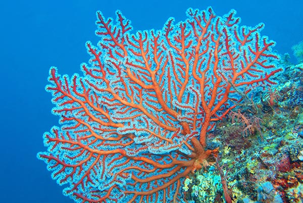

Our trips
We have trips worldwide; incredible experiences that will not only provide unique animal interactions but will also introduce you to local heroes that are making a difference in their communities each and every day. Our trips educate and connect you with conservationists that are making changes in small communities. Little steps with huge impacts!
-

Humpback Whales
Tonga is a special place to visit - and if you go at the right time, you will be forever changed by seeing these gentle giants swimming with babies and engaging in heat runs. The excitement level is high on this trip; there’s nothing like hearing the song of a humpback whale as he tries to encourage a female to mate with him. Conservation is top priority among the locals, who do their best to ensure that the whales have a safe place to mate and birth.
Whales in Tonga
-

GB Reef
Sail to some of the most incredible islands and dive sites in the world. The Great Barrier Reef is the world’s largest living organism, stretching over 2,000 km down the eastern coast of Australia. This trip will allow you to ‘live’ on the reef. We will visit turtle conservatories, shark protected breeding grounds, and you’ll learn about measures that are being taken to preserve this treasure.
Sail the Reef
-

Galapagos
This trip is an amazing opportunity to visit many of the islands in the archipelago. There is so much diversity and an abundance of wildlife that is found nowhere else on earth. We will spend 10 days with sharks, mantas, turtles, ocean iguanas and so much more. Learn about the unique conservation efforts and amazing animals found only in the Galapagos.
Diversity central
-

Sharks
Want to swim with sharks? This trip is for you. We will see tiger sharks, hammerheads, lemons and occasionally whale sharks. Not only will you have a thrill experiencing silent, graceful beauties swim right by you, you will also learn about the importance of sharks. These top-level predators are necessary for a healthy ocean and help keep all the other species healthy as well.
Sharks, sharks, sharks!
-

Coral Restoration
Learn about coral re-growth and restoration. On this trip you will work with a team of coral specialists. You’ll see how they grow and care for the coral polyps, and once they are large enough, how each one is meticulously attached to the reef. You will help our team monitor assess the health of corals at various stages of growth and even be able to attach new coral to help the reef grow!
Thailand coral project
-

Maldives
Our Maldives experience combines adventure with cultural and sustainable travel. Our tours allow guests to learn about the Maldives, and its culture, beliefs, and traditions through the eyes of a local. You’ll stay in an overwater bungalow that overlooks a richly diverse lagoon. The island is a safe nesting site for Olive Ridley and Green Sea Turtles. You’ll also be able to work with locals, assisting with rescues and rehabilitation in this incredible ecosystem.
Culural ocean safari